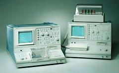

Curve Tracing
Curve
tracing
is the process of analyzing the
current-voltage characteristics of an
electrical path using an equipment known as a
curve tracer
(see Fig. 1).
A standard curve tracer has a CRT screen that can show the behavior
of the current as the voltage is varied. The CRT display of a curve tracer consists of a grid that
displays the current level along the y- axis and the voltage level along
the x-axis. The intersection of the main (center) axes is the point where
both the current through and the voltage across the selected electrical
path are zero.
Curve tracing
is very useful in failure verifications and in the early stages of failure
analysis. It can identify electrical failures that exhibit abnormal
voltage-current relationships at the output pins. A curve tracer is usually used with two probes, one for
each of the nodes that define the electrical path being characterized.
|
 |
|
Fig. 1.
Photo of Tektronix Curve Tracers |
When performing
curve tracing on an integrated circuit, one of the probes is usually
attached to a
reference
pin as the other probe is rotated among the other
pins, i.e., it is connected to each of the other pins one at a time.
The voltage-current (V-I) curve of each pin of the
device under test
(DUT)
with respect to the reference pin is then compared to that exhibited by a
known good device (KGD).
The analog ground (AGND), +Vs, and -Vs pins are usually chosen as
reference pins since they are nodes that are, more often than not, common
to all the other pins.
Interpreting a
V-I curve is not difficult.
For example, an electrical path that projects a horizontal line at I=0 on
the CRT display is an open circuit, since the current level remains at
zero even if the voltage is varied from a negative to a positive value. On
the other hand, a vertical line along V=0 indicates a short, since the
voltage stays at zero regardless of the current level.
A purely resistive path would show a straight, diagonal line, with
the reciprocal of the slope of the line equal to the resistance value
(R=V/I). Curve tracing is
likewise a convenient tool for locating the breakdown voltages of a p-n
junction, or even show the beta curves of a transistor.
Curve tracing can also
be done on an electrical path inside the die circuitry itself, where the
nodes defining the electrical path are not connected to any external pins.
Microprobing is then employed to achieve
electrical contact with the selected nodes, with the probe needles also
attached to the curve tracer.
Fig. 2. Examples of I/V Curve Traces
See Also:
Failure
Analysis; All
FA Techniques;
Failure
Verification;
Microthermography; LEM;
Microprobing; FA Lab
Equipment; Basic FA
Flows;
Package Failures; Die
Failures
HOME
Copyright
©
2001-Present
www.EESemi.com.
All Rights Reserved.